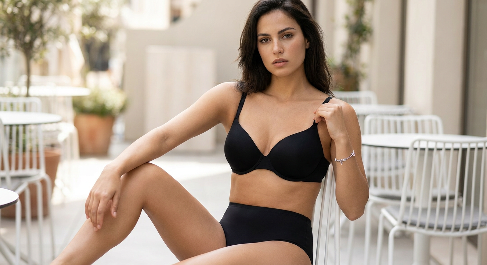
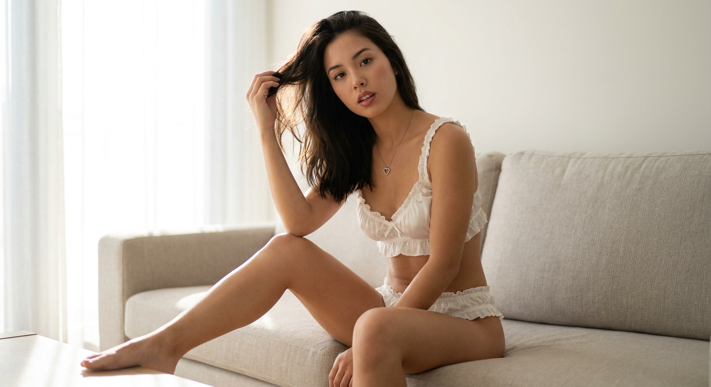
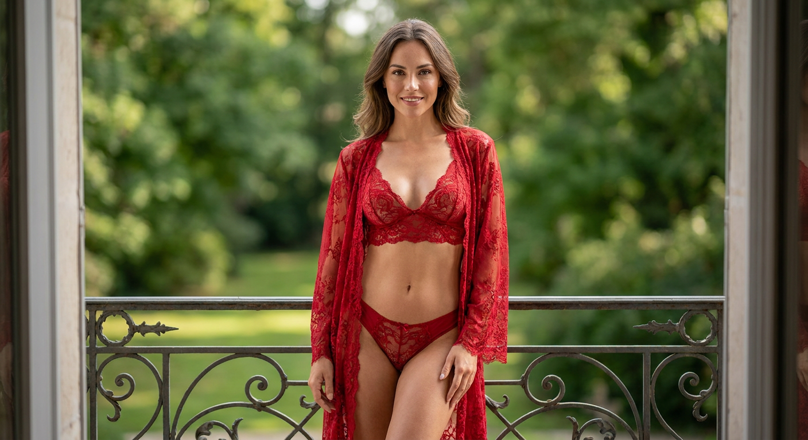
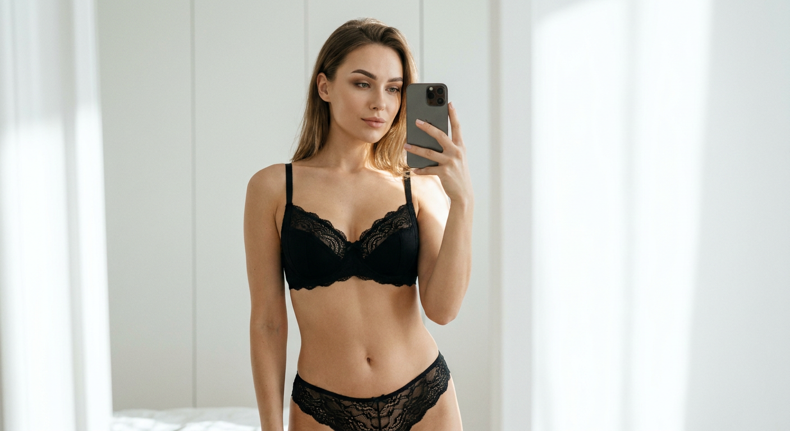
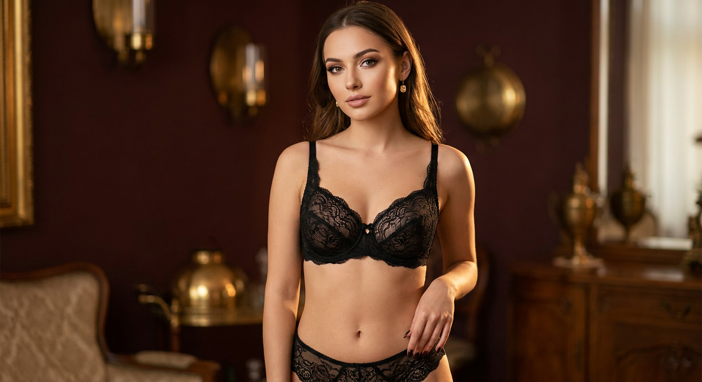
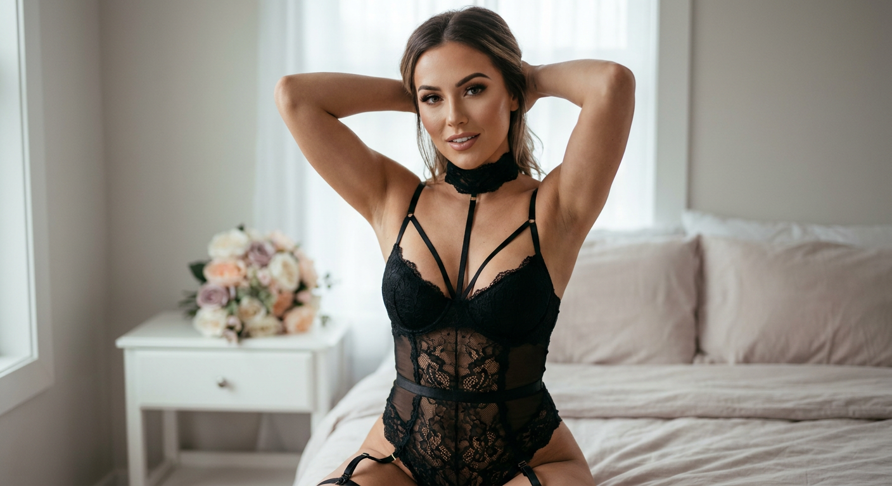
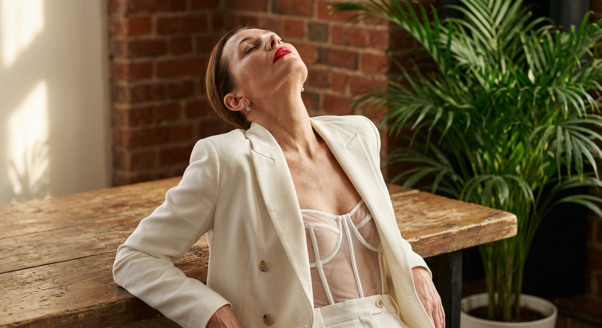
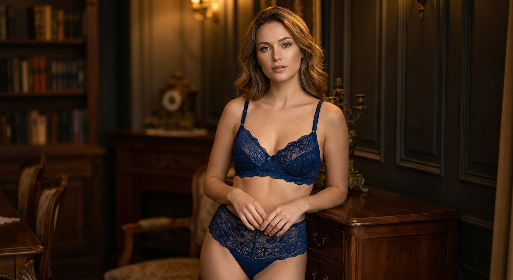
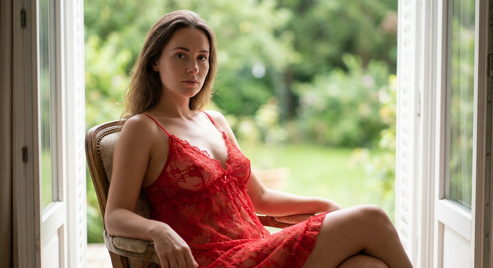
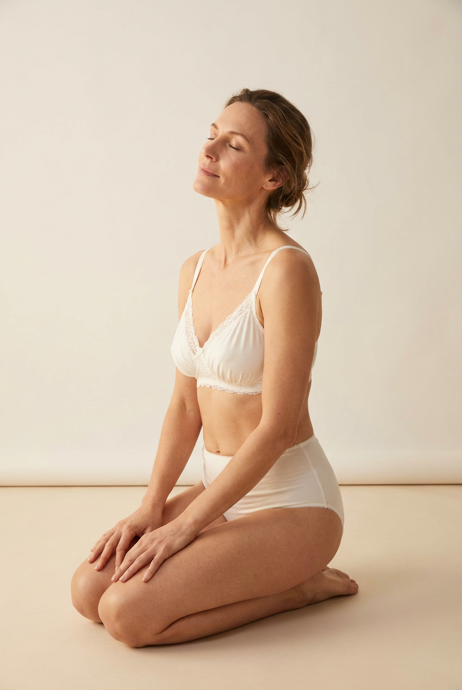

Откровенные ИИ-фото: 10 промптов для нейросети

Сексуальный кадр от нейросети часто выглядит искусственно: кружево превращается в пятна, руки получают лишние пальцы, а лицо теряет сходство с референсом. Хороший промпт решает эту проблему ещё до генерации — задаёт одежду, позу, свет, объектив и границы откровенности.
Внутри — 10 готовых сценариев для взрослых моделей: от бельевой съёмки на террасе до зеркального селфи и минималистичной студии. Все описания можно адаптировать под свой референс, цвет белья, интерьер и настроение кадра.
Как сгенерировать такое фото: пошагово
Нужен снимок анфас при ровном свете, лицо в кадре целиком, без тёмных очков и головных уборов. Разрешение от 1000 пикселей по короткой стороне. Чем чётче исходник, тем точнее модель повторит черты.
Выберите сценарий ниже и нажмите «Копировать» — текст уйдёт в буфер целиком, вместе с командой сохранения внешности. Эта команда стоит первой строкой и отвечает за то, чтобы на выходе было ваше лицо, а не случайное.
Кнопка «Сгенерировать» рядом с каждым промптом открывает модель в новой вкладке. Nano Banana Pro работает с референсом лица — в отличие от моделей, которые генерируют портрет с нуля и узнаваемость теряют.
Промпт — в поле ввода, портрет — через загрузку референса. Порядок значения не имеет, но без референса команда сохранения внешности работать не будет: модели нечего сохранять.
Для сторис и ленты берите 9:16, для превью и обложек — 4:3. Первый результат редко идеален: если поза или свет ушли не туда, поправьте соответствующую часть промпта и запустите заново. Обычно хватает двух-трёх итераций.
10 промптов для генерации
1. Чёрное бельё на террасе
Строго сохранить внешность по загруженному референсу: черты лица, пропорции, мимику и текстуру кожи без изменений. Фотореалистичная fashion-съёмка взрослой женщины в непрозрачном чёрном комплекте: бюстгальтере и чёрных трусиках без просвечивания. Использовать лицо с загруженного референса, точно передать форму глаз, бровей, носа, губ, овал, мимику и естественные пропорции. Волосы уложены аккуратно, макияж дневной, взгляд выразительный и направлен в объектив. Локация — современная открытая терраса или уличное кафе с белыми пластиковыми либо металлическими столами и стульями, светлой архитектурой и мягким размытым фоном. Модель сидит или полусидит на краю стула: одно колено близко к камере и согнуто, вторая нога вытянута в сторону, корпус развёрнут под небольшим углом. Одна рука касается ремешка у груди, другая лежит на стуле или колене. Натуральный дневной свет, мягкое боке, реалистичная кожа и ткань.
2. Белое бельё на диване

Строго сохранить внешность по загруженному референсу: черты лица, пропорции, мимику и текстуру кожи без изменений. Натуральный фотореалистичный портрет взрослой женщины в белом комплекте белья с рюшами. Она сидит на краю дивана в светлом современном интерьере, одна нога вытянута вперёд, свободная рука касается волос. Взгляд прямой, губы слегка приоткрыты, на шее тонкая цепочка с подвеской в форме сердца. Лицо взять с загруженного референса и сохранить индивидуальные черты, мимику и пропорции без стилизации. Съёмка при мягком рассеянном дневном свете, падающем слева, с тонкой контровой подсветкой. Малая глубина резкости, объектив 50mm, диафрагма f/1.8, тёплая натуральная цветовая гамма, высокая резкость, минимальный шум и реалистичная текстура кожи. Бельё закрывает тело аккуратно, без лишней откровенности; ткань, рюши и посадка должны выглядеть правдоподобно.
3. Красное кружево на балконе

Строго сохранить внешность по загруженному референсу: черты лица, пропорции, мимику и текстуру кожи без изменений. Полнофигурный фотореалистичный портрет взрослой женщины на балконе. На ней элегантный красный кружевной комплект и полупрозрачный кружевной халат с хорошо читаемой фактурой ткани. Лицо повторяет загруженный референс: сохранить форму глаз, бровей, носа, губ, овал лица, естественную мимику и реальные пропорции. Женщина стоит расслабленно и уверенно, смотрит прямо в камеру, на лице мягкая естественная улыбка. Позади — зелёный сад, слегка размытый в боке. Освещение мягкое дневное, тёплое, с деликатным свечением кожи; макияж лёгкий и аккуратный. Использовать объектив 85mm и диафрагму f/1.8, малую глубину резкости, высокое разрешение, чёткую детализацию кружева и кожи. Цветокоррекция профессиональная, контраст мягкий, изображение похоже на настоящую журнальную фотосъёмку.
4. Зеркальное селфи в белье

Строго сохранить внешность по загруженному референсу: черты лица, пропорции, мимику и текстуру кожи без изменений. Фотореалистичный fashion-boudoir кадр в формате зеркального селфи с взрослой женщиной. Лицо должно соответствовать загруженному референсу, включая форму глаз, бровей, носа, губ, овал и естественное выражение. Макияж аккуратный: чёткие брови, мягко подчёркнутые глаза, натуральные губы. Крупный план от груди до талии, взгляд направлен в зеркало и воспринимается как взгляд в камеру; выражение спокойное и уверенное. На модели чёрный кружевной комплект: непрозрачный бюстгальтер с чашками и декоративной отделкой, чёрные кружевные трусики с плотной посадкой без прозрачности. Хорошо показать узор кружева, швы и реалистичное прилегание ткани. Она стоит в светлой белой комнате, корпус повёрнут на три четверти. Одна рука держит смартфон перед лицом на уровне головы, телефон частично закрывает кадр, вторая рука расслабленно опущена у талии. Естественный свет, чистый фон, реалистичная оптика.
5. Чёрное кружево и серьги

Строго сохранить внешность по загруженному референсу: черты лица, пропорции, мимику и текстуру кожи без изменений. Фотореалистичный fashion/editorial портрет взрослой женщины с лёгким гламурным настроением. Внешность взять с загруженного референса и без изменений передать форму глаз, бровей, носа, губ, овал лица, мимику и пропорции. Макияж аккуратный: выразительные глаза, естественные губы. Модель стоит в ракурсе три четверти, плечи расслаблены, смотрит прямо в объектив или немного в сторону сдержанно и уверенно. На ней чёрный комплект из непрозрачного кружева: бюстгальтер с косточками и поддержкой, кружевные трусики без просвечивания, без видимых сосков и без наготы. Узор кружева, края и посадка ткани детализированы и реалистичны. Дополнить образ небольшими серьгами-подвесками или длинными серьгами, ногти покрыть тёмным лаком. Одна рука свободно лежит вдоль бедра, вторая поднята к плечу или волосам. Мягкий студийный свет, натуральная кожа, журнальная цветокоррекция.
6. Чёрное боди в спальне

Строго сохранить внешность по загруженному референсу: черты лица, пропорции, мимику и текстуру кожи без изменений. Сделать фотореалистичный гламурный портрет взрослой женщины в чёрном кружевном боди с ремнями, подтяжками и высоким вырезом; на шее чёрный чокер. Лицо использовать с загруженного референса, сохранив индивидуальные черты, форму глаз, бровей, носа, губ, овал, мимику и пропорции. Макияж выразительный, но реалистичный. Женщина стоит уверенно, обе руки подняты и лежат на голове. Сцена разворачивается в спальне с мягкой пастельной гаммой, на заднем плане видны белый столик и букет цветов. Свет естественный, мягкий, с деликатными тенями. Применить небольшую глубину резкости и объектив 50mm, добавить кинематографичную цветокоррекцию, натуральный оттенок кожи и подробную передачу фактуры кружева. Изображение высокого разрешения, без пластикового эффекта на коже; фон уходит в мягкое размытие.
7. Пиджак и корсет у стены

Строго сохранить внешность по загруженному референсу: черты лица, пропорции, мимику и текстуру кожи без изменений. Фотореалистичный портрет взрослой женщины в белом двубортном пиджаке, под которым видны прозрачный корсет и кружевные трусики. Посадка остаётся художественной и недемонстративной, без акцента на интимных деталях. Лицо точно повторяет загруженный референс: сохранить глаза, брови, нос, губы, овал, естественную мимику и реальные пропорции. Модель сидит, откинувшись назад на деревянный стол, голова слегка запрокинута, глаза закрыты, губы покрыты яркой помадой. В ушах небольшие лаконичные серьги. Фон — кирпичная стена и зелёное растение. Использовать мягкий тёплый боковой свет, малую глубину резкости, объектив 50mm, диафрагму f/1.8 и кинематографичную цветокоррекцию. Кожа выглядит натурально, детали одежды резкие, поверх изображения — тонкая плёночная зернистость.
8. Сапфировое бельё у мебели

Строго сохранить внешность по загруженному референсу: черты лица, пропорции, мимику и текстуру кожи без изменений. Фотореалистичный fashion-boudoir портрет взрослой женщины в тёмно-синем или сапфировом комплекте кружевного белья. Материал непрозрачный, узор хорошо читается, бюстгальтер имеет мягкие чашки или косточки и регулируемые бретели, трусики выполнены с высокой посадкой. Образ должен выглядеть аккуратно, как качественная каталожная съёмка, без просвечивания. Лицо взять из загруженного референса и сохранить его индивидуальные особенности, пропорции, мимику, форму глаз, бровей, носа, губ и овал. Макияж естественный: ровный тон, аккуратные брови, подчёркнутые глаза, нейтральные губы. Женщина стоит, слегка опираясь на мебель, корпус повернут в сторону. Руки сложены перед животом, кисти соприкасаются или мягко переплетены, пальцы расслаблены, шея выглядит естественно. Кадрирование — от груди до талии, прямой спокойный взгляд в камеру, мягкий свет и реалистичная детализация ткани.
9. Красный пеньюар у балкона

Строго сохранить внешность по загруженному референсу: черты лица, пропорции, мимику и текстуру кожи без изменений. Фотореалистичный портрет взрослой женщины, сидящей на мягком стуле рядом с открытым балконом. На ней красный приталенный пеньюар с тонкими бретелями, прозрачной кружевной фактурой и деликатными рюшами по краю; ткань выглядит воздушно, но композиция остаётся элегантной и без натуралистичной наготы. Лицо должно совпадать с загруженным референсом: сохранить форму глаз, бровей, носа, губ, овал, мимику и естественные пропорции. Макияж натуральный, выражение спокойное и задумчивое, взгляд направлен в камеру. Поза изящная и расслабленная. За спиной — зелёный сад, размытый малой глубиной резкости. Свет мягкий, рассеянный, дневной, цветовая палитра тёплая. Использовать объектив 50mm, высокое разрешение, точную передачу кожи, кружева и рюш, мягкое боке. Итог должен напоминать профессиональную фотосъёмку.
10. Молочное бельё в студии

Строго сохранить внешность по загруженному референсу: черты лица, пропорции, мимику и текстуру кожи без изменений. Фотореалистичная студийная boudoir-съёмка взрослой женщины с ухоженной кожей и мягким макияжем. Лицо взять с загруженного референса, точно сохранить глаза, брови, нос, губы, овал лица, естественную мимику и пропорции. Настроение спокойное и чувственное: глаза закрыты или полуприкрыты, голова немного запрокинута, губы расслаблены. На модели белый или молочный комплект белья из гладкой либо слегка текстурированной непрозрачной ткани: бюстгальтер с закрытой формой чашек и трусики-стринги без просвечивания. Не показывать соски и гениталии, сохранить каталожную подачу одежды. Минималистичная студия с ровным светло-бежевым или кремовым фоном, гладкий светлый пол, никаких предметов в пространстве. Модель стоит на коленях, внизу кадра заметна граница пола. Свет мягкий и равномерный, кожа натуральная, тени деликатные, композиция чистая и спокойная.
Что важно учесть в этом стиле
Откровенная съёмка не обязана быть натуралистичной. Для убедительного результата лучше заранее обозначить взрослый возраст модели, непрозрачность белья, закрытую посадку и отсутствие демонстрации интимных деталей. Это помогает нейросети удержать сцену в рамках fashion или boudoir-редакции.
Референс лица нужно описывать отдельно от одежды и позы: попросите сохранить форму глаз, носа, губ, овал и мимику. Для мягкого журнального эффекта подойдут 50mm при f/1.8, а для портрета с сильным размытием фона — 85mm при f/1.8. Чем точнее указаны источник света и фон, тем меньше случайных артефактов.
Идеи для вариаций
- Замените чёрное бельё на бордовое, сапфировое или молочное, сохранив непрозрачную ткань.
- Перенесите сцену из спальни в гостиничный номер, светлую гардеробную или закрытую оранжерею.
- Попросите съёмку на рассвете, при пасмурном дневном свете или с одним тёплым боковым источником.
- Измените кадрирование: портрет по грудь, план до талии или полный рост с заметным интерьером.
- Добавьте реквизит без визуального шума: телефон, тонкую цепочку, букет или белое кресло.
Как собрать свой промпт
Сначала назовите тип изображения и возраст модели, затем опишите лицо и референс. После этого задайте бельё: цвет, материал, плотность ткани, форму чашек и посадку. Отдельными фразами добавьте позу, направление взгляда, выражение лица и положение рук.
В конце укажите локацию, фон, источник света и параметры камеры. Для одного результата лучше задать одну главную эмоцию и один источник света. Если кисти или кружево искажаются, упростите позу и сделайте 4–8 отдельных генераций, меняя только один параметр за попытку.
Ошибки, из-за которых кадр не получается
- Слишком много задач в одной сцене. Сложная поза, зеркало, телефон и несколько источников света одновременно повышают число артефактов.
- Нет ограничений для одежды. Без слов «непрозрачный материал» и «без просвечивания» кружево может превратиться в случайные полупрозрачные пятна.
- Размытое описание лица. Фразы вроде «красивая девушка» не помогают сохранить сходство с референсом.
- Неподходящий объектив. 24mm может растянуть тело в портретной сцене, поэтому для бельевой съёмки лучше начать с 50mm или 85mm.
- Слишком сильная ретушь. Просьбы о безупречной коже часто дают пластиковое лицо и стирают индивидуальные черты.
Частые вопросы
Как сделать такое ИИ-фото бесплатно?
Для первых тестов можно попробовать Kandinsky и Шедеврум: они подходят для безопасных fashion-сцен, но могут ограничивать откровенное бельё и не всегда точно работают с лицом по референсу. Krea AI и Arena.ai удобны для сравнения вариантов, однако доступность генераций, загрузка референсов и правила контента меняются. Бесплатные режимы обычно дают меньше попыток, ниже приоритет и не гарантируют стабильное сходство. Используйте только собственные фотографии или изображения с разрешением модели.
Как сохранить лицо с фотографии?
Загрузите качественный референс с хорошо освещённым лицом и отдельно опишите, какие черты нельзя менять. Не добавляйте одновременно сильную стилизацию, необычный грим и сложный ракурс. Если сервис поддерживает силу влияния референса, начните со среднего значения и сделайте несколько вариантов.
Почему нейросеть портит кружево и руки?
Кружево и пальцы относятся к сложным мелким деталям. Упростите позу, не закрывайте кисти телефоном или волосами, укажите количество пальцев и попросите реалистичные швы, края и посадку ткани. После этого проверьте несколько генераций, а не оценивайте результат по одной попытке.
Можно ли использовать такие изображения публично?
Публикуйте только изображения совершеннолетних персонажей и не выдавайте вымышленный кадр за настоящую фотографию. Для реального человека нужно согласие на использование лица и образа. Также проверьте правила выбранного сервиса и площадки: ограничения на сексуализированный контент и дипфейки могут отличаться.